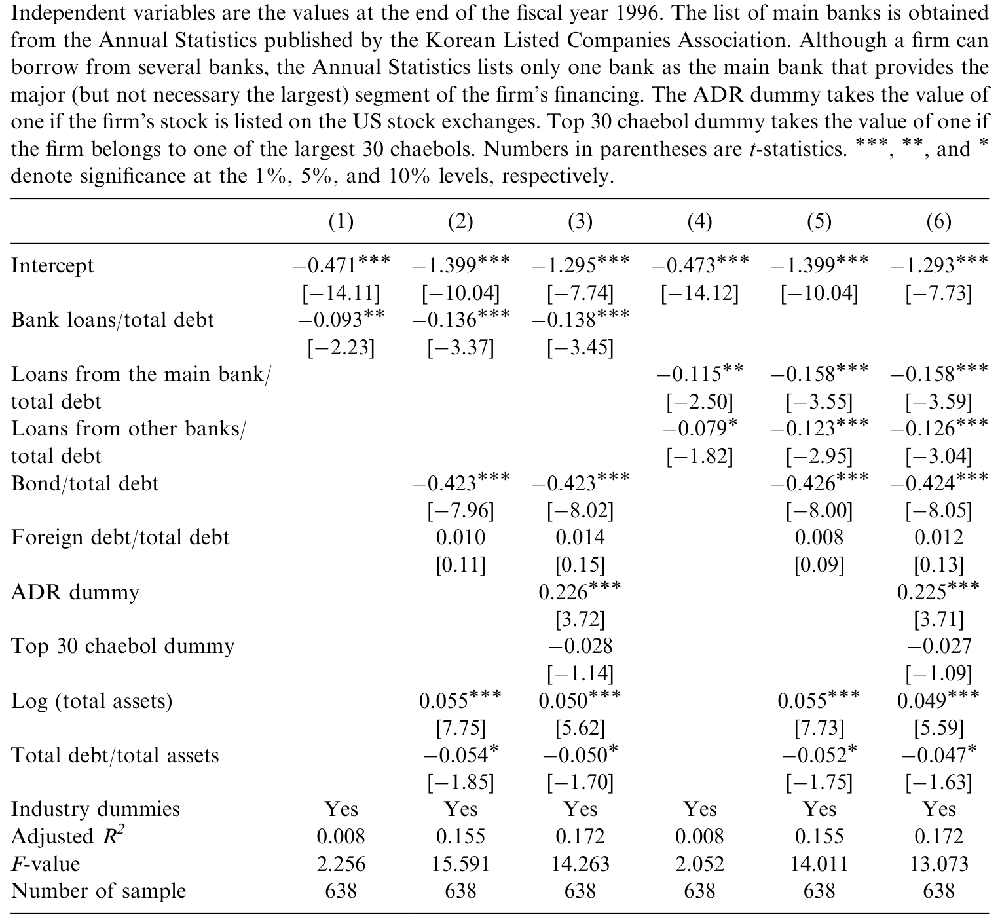
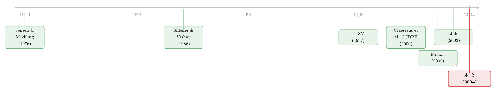

危机是一台显影液：把「公司治理」从内生性里冲洗出来
本文读的是 Baek, Kang & Park (2004, Journal of Financial Economics)：在 1997 年韩国金融危机这场外生冲击里，不同公司治理特征的企业，股价跌幅相差悬殊——外资持股越多、信息披露越好的公司跌得轻；而财阀 (chaebol) 里家族控制越集中、控制权超过现金流权越多、向主银行借得越多的公司，跌得越惨。治理不是装饰，它在危机里直接定价。
1 一个让所有人头疼的内生性
公司治理 (corporate governance) 好，公司值钱——这句话几乎是金融学的常识。可一旦你真想把它写成一篇能站得住脚的实证论文，麻烦就来了。
麻烦在哪？在于因果方向说不清。治理好的公司估值高，这固然可以解读成「好治理带来高价值」；但反过来同样成立——日子好过、现金流充沛的公司，本来就更舍得请独立董事、更愿意把财报做干净、也更容易吸引外资进来。于是治理与价值像两条互相缠绕的藤，你很难说清是谁推动了谁。计量上这叫内生性 (endogeneity)：解释变量（治理）和被解释变量（价值）由同一批看不见的因素共同决定，回归系数因此被污染。
这正是早期文献绕不开的一道坎。LLSV（La Porta, Lopez-de-Silanes, Shleifer, Vishny，1997、1998）那一系列开创性的工作，用的是跨国 (cross-country) 比较：法系不同、投资者保护强弱不同的国家，金融市场发育程度也不同。跨国比较的好处是变异大、对比鲜明，可坏处也很明显——国与国之间差的东西太多了，法律、文化、宏观、监管全搅在一起，你很难把「治理」这一条干净地剥出来。
跨国研究回答的是「国家层面的制度重不重要」；可一旦你想问「同一个国家里，A 公司比 B 公司治理更好，是不是就更抗跌」，跨国数据就帮不上忙了——你需要的是公司层面 (firm-level) 的精细变异。
那么，有没有办法让治理这个变量「先固定下来」，再去看它如何决定价值，从而堵住反向因果这条暗路？
2 把危机当成一台显影液
本文的答案，是危机。
1997 年 11 月，韩国货币崩盘。韩元对美元汇率在 1997 年 10 月底还是 902 韩元兑 1 美元，到 12 月底已经飙到 1,836 韩元——一个多月里韩元贬值超过 100%，韩国不得不向国际货币基金组织 (IMF) 求援。这是一场谁都没预料到、且与单个公司治理结构无关的外生冲击 (external shock)。
而这正是作者要的东西。论文的识别逻辑可以一句话讲清：
用危机【爆发前】测得的一整套治理变量，去解释危机【期间】公司价值的变化。
为什么这一步如此关键？因为治理结构是在冲击发生之前就已经定型的——外资持股多少、家族控制权和现金流权的差距、向主银行借了多少债，这些都是 1996 年底的既成事实，不可能由 1997 年那场「天上掉下来」的危机反向决定。换句话说，解释变量在时间上先于、且独立于那场冲击。作者自己的话说得很直白：since we use a given set of measures for corporate governance immediately before the external shock to explain changes in firm value, we can largely eliminate any spurious causality caused by the endogeneity problem。
这思路并非本文首创。Mitton (2002) 用五个东亚国家的公司层面数据，已经论证了危机期间治理对股价表现的影响；Johnson, Boone, Breach & Friedman（JBBF，2000）也指出，预期投资回报下滑时，控制性股东掏空 (expropriation) 小股东的动机会上升——因为继续好好经营的边际收益降了，转而把资源挪进自己口袋反而更划算。Rajan & Zingales (1998) 则补上另一半：东亚那套关系型金融在繁荣期之所以运转良好，是因为外部投资者并不真正了解资金被怎么用了；危机一来，警觉骤起，资金夺路而逃。
把这两条放在一起，就解释了为什么危机是一台显影液：平日里治理的好坏被繁荣的水位淹没，看不真切；水位一退，谁在裸泳、谁穿了泳裤，一下子全显形了。治理对价值的影响，在危机期间被放大到可观测。
本文的贡献，是把镜头从「五个国家」拉近到「一个国家」——只看韩国。为什么值得只盯着韩国？因为韩国数据有几样别处难得的特征，恰好能把治理拆解到极细的颗粒度。
3 韩国这块「天然实验田」
第一样，是财阀 (chaebol)。
韩国公平交易委员会把财阀定义为「控制性股东及其关联公司持股超过 30% 的企业集团」。财阀的典型特征是金字塔式 (pyramidal) 持股加上成员公司之间的交叉持股 (cross-shareholding)：owner-manager（兼任所有者与经营者的控制家族）只投入很小一笔股本，却凭借环环相扣的相互持股，对整个集团所有成员公司握有完全控制。这种结构给了它强烈的动机去做大集团、做多元化，哪怕某笔投资并不最大化单个成员公司的价值。
这个数字给人的冲击是直接的：1998 年底，韩国前 30 大财阀贡献了全国 GNP 的 11.97%、企业总资产的 47.79%、企业总营收的 46.54%。而 1993–1998 年间，前 30 大财阀旗下上市公司的平均资产负债率高达 77.18%，相比之下非财阀上市公司只有 65.62%。高杠杆、高集中、家族说了算——这套在繁荣期被誉为「韩国奇迹」引擎的结构，在危机里会不会反过来咬人？这正是论文要回答的。
（财阀这种「企业集团」结构本身在公司金融里是个迷人的题目，关于集团内部如何战略性地保护核心公司、又如何在并购里转移财富，可参见《被「保护」起来的核心公司，为什么反而更便宜？》 与《拍卖桌上量出来的「掏空」》。）
第二样，是控制权与现金流权的分离。
Claessens, Djankov & Lang (2000) 发现，东亚公司里控制性股东的控制权 (voting/control rights) 普遍远超其现金流权 (cash flow rights)，金字塔和交叉持股正是把两者撑开的杠杆。本文沿用 Claessens et al. (2000)、Lemmon & Lins (2001)、Mitton (2002) 的算法度量这个分离 (divergence)：现金流权 = 直接持股 + 沿金字塔链条（最多追溯两层）逐级相乘的间接持股；控制权 = 直接持股 + 控制链上各环节持股的最小值；二者之比即分离程度。当一个老板用 5% 的「钱」撬动 50% 的「权」，他在重大决策上说了算，却不必为坏结果承担全部成本——代理冲突由此被放到最大。
作者特别提醒：在韩国，这个算法其实低估了真实控制权。因为财阀成员之间还有大量交叉持股，而 owner-manager 对这些关联公司持有的股份同样有实质支配。所以论文额外用「关联公司持股比例」作为分离程度的补充度量。
第三样，是主银行 (main bank) 体系。
韩国企业历来高度依赖银行融资，并与主银行维持长期紧密关系。按教科书逻辑，主银行像一个保险人 (insurer)：长期隐性契约让它有动机在客户困难时伸出援手，所以「与主银行关系越紧密 → 公司价值越高」似乎顺理成章。
但本文要讲的恰恰是这句话的反面。
4 反转：当「优点」在危机里变成「负担」
故事到这里出现了关键的转折。
平日里被当作优点的那些东西——集中的家族控制、紧密的主银行关系——在一场把银行和企业一起砸下去的危机里，可能统统变成负担。
先说主银行。逻辑是这样的：一旦银行自身遭受外生冲击、被迫收缩放贷，那些把鸡蛋几乎都放在主银行这一个篮子里的公司，就只能转向更昂贵的外部融资，甚至被迫砍掉本可以盈利的投资。Kang & Stulz (2000) 在日本看到过同样的剧情：1990–1993 年银行业陷入困境期间，从银行借得越多的日本公司，股价跌得越狠、投资砍得越多。Bae, Kang & Lim (2002) 则在韩国直接验证：主银行遭遇负面事件时，银行贷款占比高的公司股价大跌；而那些有替代融资渠道的公司受伤更轻。
于是预测被彻底反转：公司向主银行借得越多，危机里价值越可能下跌。本文用「主银行债务 / 总债务」度量这层关系的紧密度。
这正是 Table 5 想讲的事——主银行关系与公司价值的对照。

Table 5: shows the effect of the relationship with the main bank on firm value
再说控制集中度。在非财阀公司里，Jensen & Meckling (1976) 那套经典逻辑仍然成立：owner-manager 持股越多，所有权与控制权越统一，代理问题越小。Joh (2003) 也发现，1993–1997 年间控制家族持股更多的韩国公司，表现确实更好。可一旦进入财阀，符号就翻了：高度集中的家族控制 + 交叉持股，意味着 owner-manager 更在乎整个集团的规模与存续，而非某个成员公司小股东的死活。危机里预期回报下滑，掏空动机抬头（JBBF, 2000），这套结构反而成了价值的漏斗。
而外资，是这条故事线里的正面角色。Shleifer & Vishny (1986) 早就指出，非关联的大股东（典型如外国机构投资者）有强财务激励去监督管理层。Khanna & Palepu (1999) 用印度数据发现，随着新兴市场与全球经济融合，外资承担起有价值的监督功能。本文据此预测、并最终发现：外资持股越集中的公司，危机里股价跌幅越小；披露质量更高（比如在美国挂牌了 ADR）、以及拥有替代外部融资渠道的公司，也跌得更轻。
（外资在新兴市场里到底是「监督者」还是「蝗虫」，本身就是一桩公案。关于外资长期效应的大样本证据，可参见《外资真是「蝗虫」吗？》；而把股票挂到美国、「租来一部更严的法律」是否真能约束自家老板，可参见《租来的法律：把股票挂到纽约，真能管住自家的老板吗？》。）
把这几条拼起来，本文的核心结论就清晰了：
危机期间公司价值的变化，是公司层面治理差异的函数。外资持股、披露质量、替代融资渠道——跌得轻；家族集中控制（财阀内）、关联公司持股、控制权超过现金流权、主银行借款多——跌得重。换句话说，控制性股东越有动机、也越有手段去攫取资源，公司在危机里就越脆弱。
这呼应并深化了 Mitton (2002)：治理对危机表现确有显著影响，而负面冲击集中砸在那些「既想掏空、又掏得动」的公司身上。
5 文献脉络
把这条研究线索拉直来看，它的演进有一条相当清楚的主轴：从「制度」到「公司」，从「跨国平均」到「单国细节」。
最上游是两块理论基石。Shleifer & Vishny (1986) 奠定了「大股东监督」的逻辑——为什么外部大股东会有动机去看住管理层；Jensen & Meckling (1976) 则给出代理成本与所有权结构的原始框架。

接着是 LLSV（1997、1998）的跨国革命：法律起源与投资者保护决定金融市场发育。这一支气势恢宏，却也因「国与国之间差太多」而难以分离单一因素。于是 Claessens, Djankov & Lang (2000) 把镜头对准东亚的所有权结构，量出了控制权与现金流权的普遍分离；JBBF (2000) 借 1997–1998 亚洲危机指出小股东保护如何解释危机表现。
真正把「危机 = 识别工具」这一招用起来的，是 Mitton (2002)——五国公司层面数据，证明治理在危机里定价；Lemmon & Lins (2001) 同期给出一致证据：控制权多、现金流权少的公司，危机里跌得更惨。而 Joh (2003) 提供了关键的「危机前」参照系：弱治理的韩国公司，在危机之前的会计表现就更差。
本文 (2004) 站在这条线的交汇点上：它接过 Mitton 的方法，把视野收缩到韩国一国，从而能动用财阀、主银行、交叉持股这些跨国数据无法聚合的精细变量，把治理对价值的危机定价讲到更细的颗粒度。
6 评论与延伸（Q&A + 研究方向）
(a) 几个可能的疑问
Q：用「危机前的治理」解释「危机中的价值变化」，就真的解决了内生性吗？
它解决的是反向因果那一半——治理在时间上先于冲击，价值变化不可能倒过来决定 1996 年底的所有权结构，这一步是干净的。但它不能自动排除遗漏变量：如果某种看不见的公司特质（比如经营层质量）既让一家公司治理更好、又让它天生更抗冲击，系数仍会被污染。所以这是「准自然实验」，不是随机分配，识别力强但非铁案。
Q：主银行关系在危机里有害，和「关系型银行有价值」的大量文献矛盾吗？
不矛盾，关键在状态依赖。常态下，紧密的银行关系提供保险与平滑融资，是资产；可一旦冲击同时砸向银行本身，银行被迫收贷，过度依赖单一主银行就从保险变成了风险敞口。Kang & Stulz (2000) 的日本证据正是这个机制。结论不是「银行关系无用」，而是「银行关系的价值在银行业系统性受冲击时会逆转」。
Q：外资跌得轻，会不会只是因为外资偏好挑选了本就更优质、更抗跌的公司？
这是最该担心的选择性问题。外资确实会挑「好公司」，所以横截面上「外资多 → 跌得少」里，混着监督效应和选择效应两股力量，论文的设计难以彻底分开二者。要真正分离，得有外资持股的外生变动（比如指数纳入、可投资度规则的突变）。关于外资在韩国是否真有信息劣势、以及「可投资度」如何充当外生变异，可参见《外资来了，全球新闻就传得更快吗？》。
Q：财阀集中控制有害、非财阀集中控制有益——这个符号翻转可信吗？
可信，且有清晰的经济直觉。差别在于交叉持股与集团目标：非财阀里，owner-manager 持股多意味着利益与小股东对齐（Jensen-Meckling）；财阀里，控制家族在意的是整个金字塔的存续，单个成员公司只是棋子，掏空的通道（关联交易、内部资本市场）也现成。所以同一个「集中度」变量，在两类公司里挂的是相反的经济含义。
Q：为什么不直接看会计利润，而要看股价回报？
因为股价是前瞻的，会把市场对「这家公司将来会被掏空多少」的预期一次性贴现进去；而会计利润是滞后的、且更易被操纵。危机期间，作者要捕捉的正是治理差异引发的价值重估，股价回报是更干净的标尺。Joh (2003) 用会计表现看的是危机前，二者恰好互补。
Q：结论能外推到别的危机、别的国家吗？
要小心。韩国的特殊性（财阀、主银行、极高杠杆）既是识别力的来源，也是外推性的限制。机制——「预期回报下滑 → 掏空动机上升 → 治理弱的公司被重估」——大概率可推广，但具体哪类治理变量最致命，会随各国制度结构而变。
(b) 几个可能的研究问题与提案
1. 把「危机显影液」搬到公司债与信用利差上
【经济故事】本文看的是股价，但治理弱、掏空风险高的公司，其债权人理应在危机里要求更高的信用利差。股与债对治理的反应未必同向——掏空伤股东也伤债主，但债务契约、抵押与求偿顺序会改变敏感度。把同一套危机前治理变量映射到危机期间的信用利差变化，能检验治理如何被信用市场定价。 【可行性】中。需要新兴市场公司债的交易或报价数据（韩国本币债流动性是难点），治理变量可沿用本文构造。识别仍靠「危机前治理 + 外生冲击」，doable，但债券数据可得性是主要瓶颈。
2. 外资持股的外生变动 → 危机抗跌性
【经济故事】本文「外资多则跌得轻」混着监督与选择。若能找到外资持股的外生跳变——MSCI 指数纳入、外资持股上限放开、可投资度 (investability) 规则突变——就能把监督效应从选择效应里剥出来，真正回答「外资到底有没有在危机里提供保护」。 【可行性】高。指数纳入与可投资度是文献成熟的外生工具，韩国 1990 年代的资本市场自由化恰好提供多次政策断点。可用断点/事件研究 + 危机交互项识别，相当 doable。
3. 主银行依赖度的「替代渠道」对冲价值
【经济故事】本文已暗示有替代融资（ADR、债市准入）的公司受伤更轻。可以更进一步：把「主银行依赖度 × 替代渠道可得性」的交互项，作为危机抗跌性的核心解释变量，量化「融资多元化」在系统性银行冲击下值多少钱。 【可行性】中高。主银行债务占比、ADR、债券发行记录都可得；识别靠危机冲击与公司预先存在的渠道结构。难点是替代渠道本身可能内生于公司质量，需要工具或固定效应处理。
4. 控制权-现金流权楔子的「危机弹性」是否随事后治理改革收敛
【经济故事】1997 后韩国推行了一系列治理改革。一个自然的追问是：当年那个「楔子越大、跌得越狠」的关系，在后续若干年（乃至 2008 危机）里是否减弱？如果减弱，说明改革真的削平了掏空通道；如果不变，说明金字塔的实质控制并未被触动。 【可行性】中。需要跨越两次危机的长面板与逐年的所有权链条数据（构造金字塔现金流权是体力活），识别用「同一楔子变量在不同危机中的系数对比」。doable 但数据工程量大。
参考文献
- Bae, K.-H., Kang, J.-K., Kim, J.-M. (2002). Tunneling or value added? Evidence from merger by Korean business groups. Journal of Finance 57, 2695–2740.
- Bae, K.-H., Kang, J.-K., Lim, C.-W. (2002). The value of durable bank relationships: evidence from Korean banking shocks. Journal of Financial Economics 64, 181–214.
- Baek, J.-S., Kang, J.-K., Park, K.S. (2004). Corporate governance and firm value: evidence from the Korean financial crisis. Journal of Financial Economics 71, 265–313.
- Claessens, S., Djankov, S., Lang, L. (2000). The separation of ownership and control in East Asian corporations. Journal of Financial Economics 58, 81–112.
- Jensen, M.C., Meckling, W.H. (1976). Theory of the firm: managerial behavior, agency costs and ownership structure. Journal of Financial Economics 3, 305–360.
- Joh, S.W. (2003). Corporate governance and firm profitability: evidence from Korea before the economic crisis. Journal of Financial Economics 68, 287–322.
- Johnson, S., Boone, P., Breach, A., Friedman, E. (2000). Corporate governance in the Asian financial crisis, 1997–1998. Journal of Financial Economics 58, 141–186.
- Kang, J.-K., Stulz, R.M. (2000). Do banking shocks affect borrowing firm performance? An analysis of the Japanese experience. Journal of Business 73, 1–23.
- Khanna, T., Palepu, K.G. (1999). Emerging market business groups, foreign investors, and corporate governance. NBER working paper #6955.
- La Porta, R., Lopez-de-Silanes, F., Shleifer, A., Vishny, R. (1997). Legal determinants of external finance. Journal of Finance 52, 1131–1150.
- La Porta, R., Lopez-de-Silanes, F., Shleifer, A., Vishny, R. (1998). Law and finance. Journal of Political Economy 106, 1115–1155.
- Lemmon, M., Lins, K. (2001). Ownership structure, corporate governance, and firm value: evidence from the East Asian financial crisis. Unpublished working paper, University of Utah.
- Mitton, T. (2002). A cross-firm analysis of the impact of corporate governance on the East Asian financial crisis. Journal of Financial Economics 64, 215–241.
- Rajan, R., Zingales, L. (1998). Which capitalism? Lessons from the East Asian crisis. Journal of Applied Corporate Finance 11, 40–48.
- Shleifer, A., Vishny, R. (1986). Large shareholders and corporate control. Journal of Political Economy 94, 461–488.
我的判断：这篇论文的贡献，不在于它「发现」了治理影响价值——这一点 Mitton (2002) 已经先说了——而在于它把识别做干净了，并借韩国财阀这块独一无二的实验田，把治理拆到了跨国数据够不着的颗粒度：交叉持股、主银行依赖、控制-现金流楔子，每一条都对应一个清楚的机制。最漂亮的一笔是主银行那个符号反转——常态下的资产，在系统性银行冲击里变成负担，这个洞见至今仍有现实意义。
要说担忧，核心还是两条：一是选择效应洗不干净，外资与披露质量都可能只是「好公司」的代理变量，论文的横截面设计无法把监督效应与选择效应彻底分开；二是遗漏变量，危机前治理与某种看不见的经营质量可能同源。后续我最想看到的，是用外资持股或可投资度的外生跳变来重做这件事，把「外资是不是真的提供了危机保护」从相关性推到因果——这恰好是上面研究提案 2 的方向。